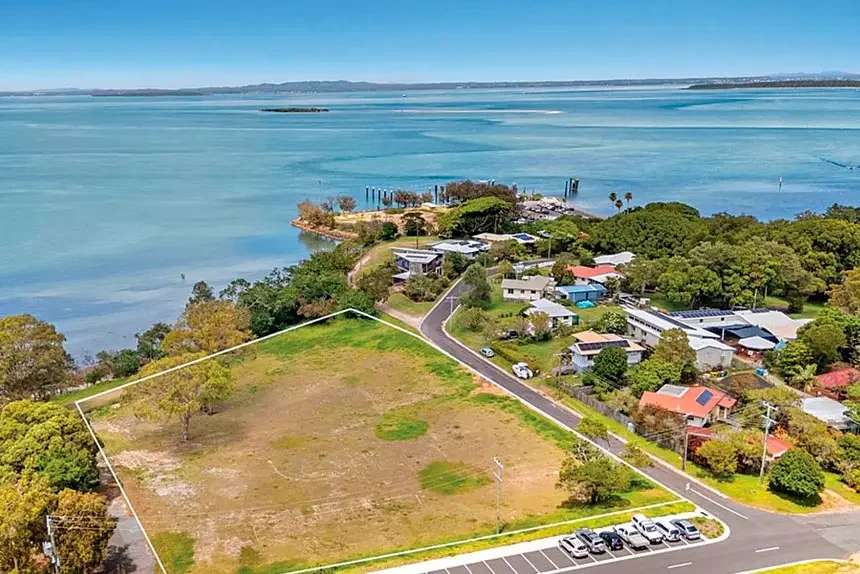

360 ideas map
Walk the site. Test your idea.
Pick a 360 photo point, look around, then build a visual prompt for what could happen at 10-12 Ballow Road. Sand sport, music, shade, markets, quiet space, art, food, oddball visitor ideas: put it on the site and see if it makes sense.
How to use it
Start with the ground in front of you.
The photos let people see the slope, trees, open patches, bay outlook, QUAMPI edge, road edge and walking lines before they argue about the idea.
If you do not want a sand sports and culture hub on the site, what do you want? Simulate it here. Any reasonable ideas, even funny or stupid first drafts, are welcome.
Site simulator
If not sand sport, then what?
Try the obvious uses and the strange ones. A rough idea can still reveal a better path, a better layout, or a neighbour who needs to be involved early.
Prompt builder
Describe what should happen here.
Tick what belongs, add your own idea, then copy the prompt. It is written for image generators, but it is also useful for a human sketch, grant note or community chat.